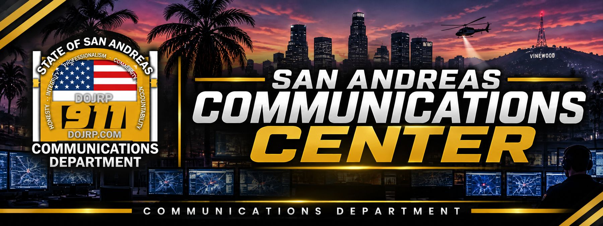

Every officer, firefighter and paramedic in San Andreas starts with a voice on the radio. Be that voice.
Apply to the Communications DepartmentWhat we do
The Communications Center is the first point of contact for every emergency in the state. We take the call, send the right units, and keep everyone on the scene informed.
911 call taking
Answer emergency calls, get the location and the nature of the problem, and keep callers calm while help is on the way.
Radio dispatch
Send law enforcement, fire and EMS units to calls, track their status, and relay updates over the air in clear, short traffic.
Unit support
Run plates and names, log calls, watch officer safety, and make sure the person in the field has what they need.
A call, start to finish
Every call follows the same path through the Center.
- AnswerPick up and confirm the location first.
- TriageDecide what happened and how urgent it is.
- DispatchSend the right unit on the right channel.
- SupportTrack the unit and relay new information.
- CloseLog the outcome and clear the call.
What we stand for
These five words are on our emblem. They are also how we expect every dispatcher to work.
- Honesty
- Integrity
- Professionalism
- Community
- Accountability
Who we’re looking for
You don’t need prior dispatch experience. You need to be reliable and calm when the channel gets busy.
- A working microphone and clear audio
- Calm, clear communication under pressure
- Active in the community Discord
- Willingness to complete training and follow procedure
- Respect for staff, members and fellow responders
Questions
How do I apply?
Select Apply now and complete the application form. It opens in a new tab.
What happens after I apply?
The Communications Department staff review your application and contact you through Discord with the next steps.
Do I need dispatch experience?
No. New dispatchers are trained before they take live calls.
Who do I work with?
Law enforcement, fire and EMS. Dispatch is the link between all three.